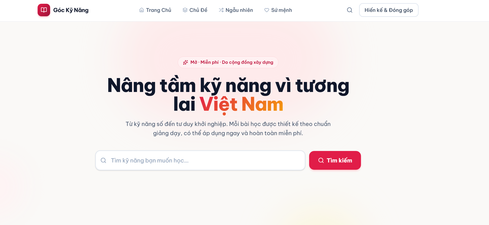
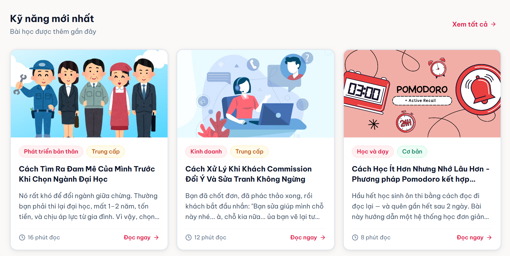
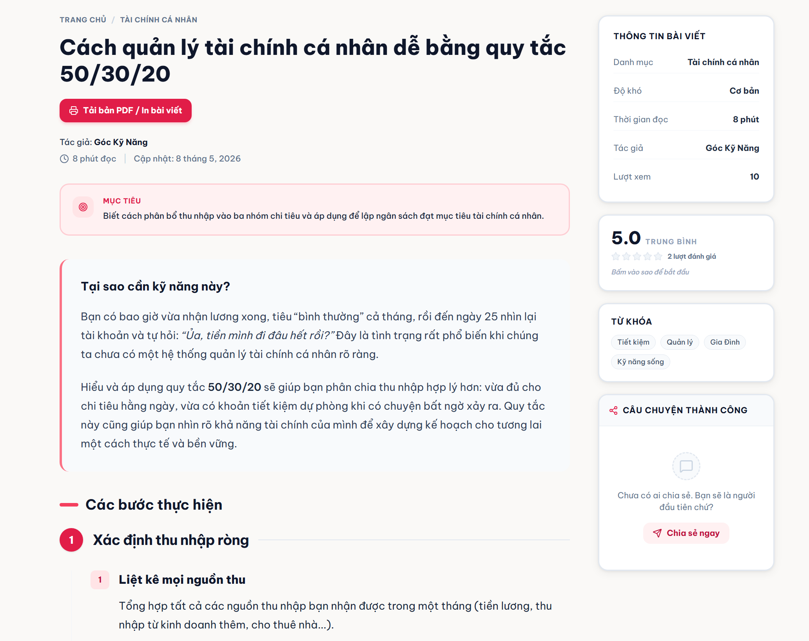
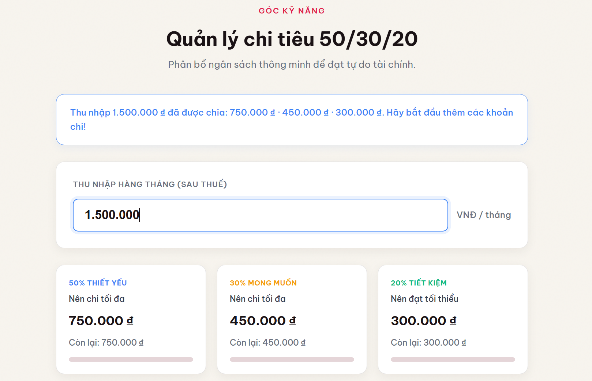
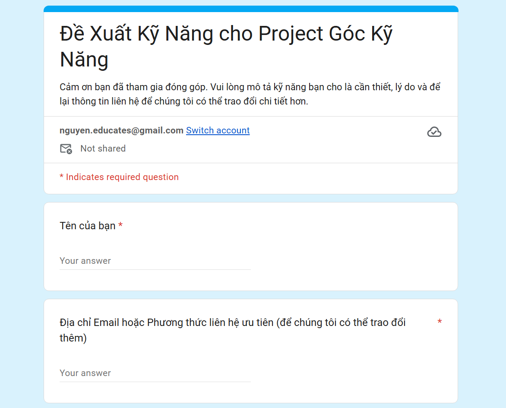

◆ CHAPTER 04
Skill Wiki: Practical Skills Learning Platform.
DIFFICULTY
★★★★★
PARTY SIZE
Solo Developer
DURATION
Ongoing
STATUS
● Live Build
◆ MISSION BRIEFING - THE PROBLEM
◇ UPCOMING PHASE
Practical life skills are the missing foundation in traditional education.
Many learners find themselves with academic knowledge but struggle with the practicalities of modern life—from financial literacy to sustainable habits. Information online is often fragmented, biased, or disconnected from the local Vietnamese context. I started to bridge this "Practical Void" by creating a centralized, reliable repository for actionable intelligence.
⚠ THE DEBUFF
DEBUFF · 01
Scattered & unverified online advice.
DEBUFF · 02
Theoretical focus over practical application.
DEBUFF · 03
Content mismatched to local context.
◆ STRATEGY - THE SOLUTION
CHOSEN APPROACH
Building a Practical Skill Library - free, deep, and designed for self-improvement.
Skill Wiki was born to fill the gap between school and life. My approach is purely action-oriented: clear, step-by-step guides that are ready to apply. Beyond just "How-To," each article includes a "Thought Corner" (Góc Tư Duy) to help learners understand the underlying principles, enabling them to act not just effectively, but intelligently and autonomously.
◆ CORE BELIEFS (PASSIVE BUFFS)
Critical Thinking
Future Stewardship
Income Bridge
National Prosperity
◆ TECHNOLOGY STACK
PLATFORM INFRASTRUCTURE
EQUIPMENT 01 · CONTENT ARCHITECTURE
Sanity CMS
Ensuring a scalable and consistent content structure across the entire platform. Sanity allows me to rapidly deploy new skill guides while maintaining a unified pedagogical framework.
EQUIPMENT 02 · HOSTING INFRASTRUCTURE
Vercel
High-performance hosting for a seamless and lightning-fast user experience. Vercel handles my global distribution, ensuring that knowledge is accessible to anyone, anywhere, instantly.
EQUIPMENT 03 · DEVELOPMENT OPTIMIZATION
Antigravity AI
Optimized development workflow through advanced AI-assisted coding. Antigravity acts as my technical companion, helping me write clean, efficient code and solve complex architectural challenges.

EQUIPMENT 04 · VISUAL COMMUNICATIONS
Canva
Crafting professional illustrations and high-impact cover art. Canva empowers me to create a visually consistent and engaging brand identity that resonates with my learners.
EQUIPMENT 05 · CONCEPTUAL ARCHITECTURE
Claude
Generating the initial ideas for articles and designing the first-look of interactives. Claude helps me create tools that allow learners to immediately apply their knowledge in practical, high-fidelity scenarios.
◇ PLATFORM FEATURES
PLATFORM MECHANICS
◆ FEATURE 01 · INTELLIGENT SEARCH & DISCOVERY
Find Exactly What You Need
I implemented a robust search bar that allows learners to filter by name or specific tags, ensuring that the right knowledge is always just a few keystrokes away. Each article card is a data-rich preview, showing the topic, synopsis, difficulty level, and estimated read time at a glance.

Search engine optimized for rapid skill discovery.

Flat-illustration icons created in Canva for visual consistency.
◆ FEATURE 02 · STANDARDIZED LEARNING EXPERIENCES
Defeating "Vibe Coding" Inconsistency
By using Sanity CMS, I've enforced a rigid, high-quality format for every article. This solves the problem of inconsistent styling, ensuring learners always know exactly what to expect: from the initial "Why" to the final Mission Challenge.

✦ CORE STRUCTURE: Consistent sections including "Why Learn", "Steps", and "Critical Thinking".
✦ THE ARTICLE SIDEBAR
Includes article ratings and core metadata, providing social proof and reliable trust factors for every learner.
✦ SUCCESS STORIES
Real-world feedback from learners who have put the knowledge into practice, closing the loop on impact.
◆ FEATURE 03 · IMMEDIATE MASTERY
Actionable Knowledge Assets
The core goal of Góc Kỹ Năng is for learners to immediately put their knowledge to practice. Using Claude for initial logic and Antigravity for refinement, I create sustainable interactive tools that make the learning journey actionable.

Sustainable tools built to bridge the gap between theory and practice.
◆ COMMUNITY CONTRIBUTION & FEEDBACK LOOPS
Evolving Through Collaboration
Anyone can propose new skills or provide feedback on existing content through my official contribution form. Your insights are the engine that drives Góc Kỹ Năng forward, ensuring the platform stays relevant to the community's needs.

Open communication channels for continuous platform improvement and skill requests.
★ ★ ★ LEGENDARY LOOT ★ ★ ★
Skill Wiki Hub - Impact Analysis
A sustainable arsenal of practical knowledge, designed to scale with the community's needs.
+800 XP · BOSS DEFEATED
+800 XP · PROJECT LIVE
◆ TOTAL XP EARNED1,600 / 1,600